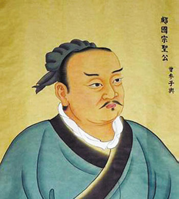

“宗圣”曾子简介
曾子（公元前505年—前435年），名参，字子舆，春秋末年鲁国南武城（今山东嘉祥）人。他上承孔子，下传思孟，是孔子思想的重要传承者，小孔子46岁。曾子自幼跟随父亲曾皙读书，17岁时投奔正在周游列国的孔子，成为孔子的学生。他勤学好问，对孔子学说融会贯通，在孔子弟子中“三千虽多，独得其宗”。
曾子著述颇丰，他编《论语》、著《曾子》、作《孝经》、传《大学》。他不仅忠实地传承了孔子的思想，而且在孝道、修身等方面有新的建树。后代对其多有追封，唐代被封为“郕伯”，宋代被封为“郕国公”，元代被封为“郕国宗圣公”，明嘉靖九年（公元1530年）被封为“宗圣”。
其主要思想为：
以孝为本的伦理思想。躬行孝道是曾子做人的基本道德准则。他照料父母“昏定晨省”，敬重父母“不过胜母之闾”，关心父母“不离亲一夕宿于外”。父亲去世后，其“每读丧礼，泣下沾襟”。他以“天地之间人为大”的人本思想为总纲，把孝作为“天下之大经”，从孝是“仁之本”推衍开去，构建了“孝”的完整理论体系。这一理论体系有血缘亲情的维系和长期教化，使孝文化深深植根于中华民族文化之中。
注重内省的修身思想。曾子把修身看作是实现仁政德治的根本。他以君子为修身标准，就如何说话、做事、待人、交友提出了一系列主张；他以学习、实践与自我反省有机结合作为修身基本方法，强调“爱日以学，及时以行”“日旦就业，夕而自省”。他“吾日三省吾身”和“慎独”的境界，是人们公认的修身规范；他“冻饿而守仁”“临大节而不可夺”的君子气节，影响着一代又一代仁人志士坚定志向、固守道义。
修齐治平的政治主张。他从“事父可以事君”相推衍，提出了“始于事亲，中于事君，终于立身”以孝治天下的思想。他以修身为根本环节，提出“格物、致知、诚意、正心、修身、齐家、治国、平天下”，为从政者指明了人生修养的路径。

-- 中共山东省委组织部主办 --
Copyright 2013-2017 中共山东省委组织部 All rights reserved
鲁ICP备09016644号-3 地址 : 山东省济南市 技术服务热线 : 400-690-7927